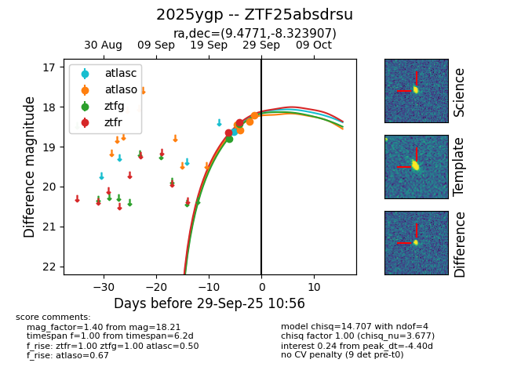
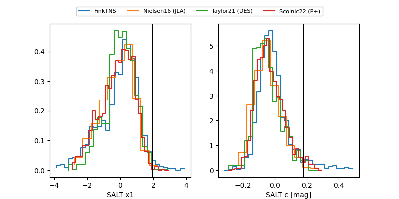

FINK: ZTF25absdrsu
Lasair: ZTF25absdrsu
ALeRCE: ZTF25absdrsu
TNS: 2025ygp
YSE: 2025ygp
ZTF25absdrsu (ztf,fink)
2025ygp (tns,yse)
equatorial (ra, dec) = (9.4771,-8.32391)
galactic (l, b) = (112.6418,-70.92485)


last atlasc=18.64, atlaso=18.21, ztfg=18.42, ztfr=18.40
1 atlasc, 4 atlaso, 2 ztfg, 2 ztfr detections